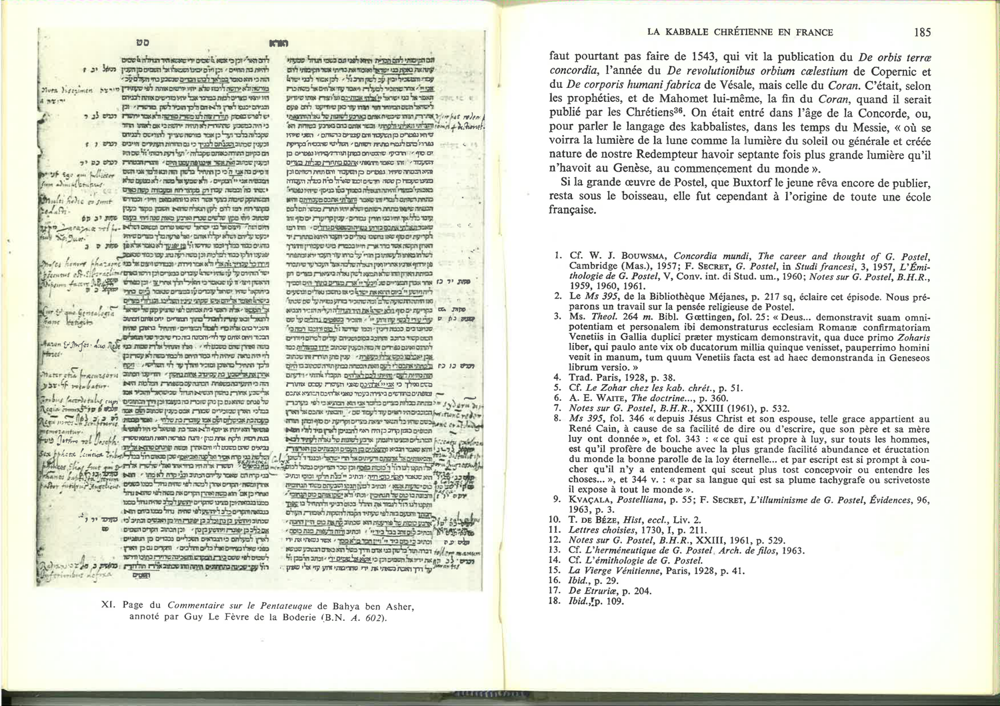

Chunk 34
Pages 107-109
**Engraved Portraits and Manuscript Documentation**
This section is primarily visual and documentary, featuring two significant engraved plates:
1. **Guy Le Fèvre de la Boderie's Portrait** (Plate X): An estampe from Estampes Ed 12b, 418, depicting one of Postel's most distinguished disciples with an accompanying verse legend. The portrait and verse emphasize Le Fèvre's linguistic and spiritual authority: "Revit FEU VERGILE et sa fée / Revit en l'UN QUI GUIDE ORFEE" (Vergil and his Muse live again / Live again in the ONE who guides Orpheus), establishing him as the heir to classical poetic wisdom and Postelian mystical guidance.
2. **Annotated Manuscript Page**: A reproduction of a page from Bahya ben Asher's Commentary on the Pentateuch (B.N. A. 602), densely annotated by Guy Le Fèvre de la Boderie. These handwritten glosses in the margins testify to Le Fèvre's careful, learned engagement with Hebrew exegetical tradition and his integration of kabbalistic interpretation into scholarly biblical study.
These visual materials serve as evidence of the transmission of Postel's doctrines to his disciples and the cultivation of kabbalistic expertise through manuscript study and annotation.
**Chronological and Eschatological Significance**
The section concludes with an interpretive note on the year 1543, when Postel published *De orbis terræ concordia* (On the Concord of the World). Secret argues that this year should not be reduced to a parallel with Copernicus's *De revolutionibus orbium cælestium* or Vesalius's *De corporis humani fabrica*, but rather understood as marking the publication of the Quran—an eschatological event signifying the end of Islamic dominion and the approach of the Messianic age of Concord.
According to Postelian prophetic reckoning, humanity has entered the age where Christ's light will shine "seventy times more brightly than it did in Genesis at the creation of the world" (septante fois plus grande lumière). This represents not merely a historical marker but the threshold of universal restoration where the Messiah's promised illumination becomes manifest.
**The School of Postel**
The final notation indicates that despite not founding an organized sect of "Postellians" (as both Reformed and Catholic critics alleged), Postel did gather devoted disciples and admirers who would carry his doctrines forward into the later sixteenth century. The subsequent section promises to examine this "École de Guillaume Postel" (School of Guillaume Postel), establishing the framework for tracing how his mystical vision influenced second and third-generation French intellectuals and shaped the trajectory of Christian Kabbalah in France through the sixteenth and early seventeenth centuries.
This chunk functions as a visual and transitional hinge, documenting the tangible evidence of Postel's influence through portraiture and manuscript, while anchoring his work in an eschatological timeline that frames 1543 as a pivotal moment in sacred history.

Gravure : scène figurée